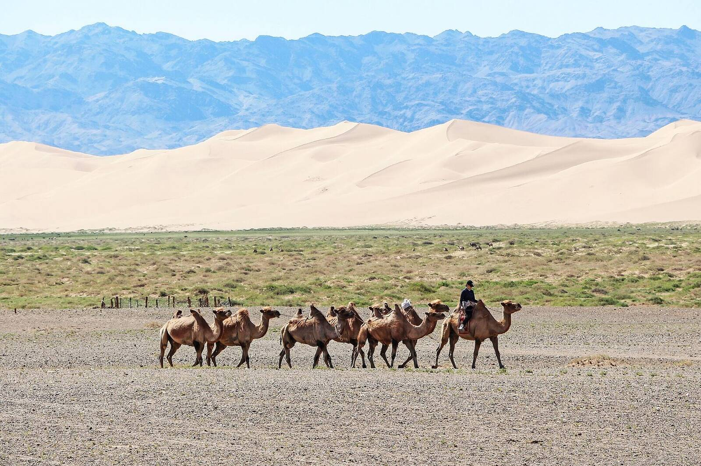

Mongolia, under the eternal blue sky몽골, 영원한 푸른 하늘 아래
Private tours for your own team, run directly by a Mongolian agency with a Korean manager and Korean-speaking guides.몽골 현지 여행사가 직접 운영하는 우리 팀 단독 투어. 한국인 매니저와 한국어 가이드가 함께합니다.
Choose your Mongolia나만의 몽골 여행을 고르세요
Every tour runs privately for your own team, with a Korean-speaking guide and a private vehicle. Open a tour for its full day-by-day timetable.모든 투어는 한국어 가이드와 전용 차량으로 우리 팀만 단독 진행합니다. 상품을 누르면 시간대별 전체 일정을 볼 수 있어요.
Prices are per person in Korean won and depend on team size; tours without a price are quoted on request. Book with a ₩100,000 deposit per person; the balance is paid in Korean won cash on day 1. International flights are not included.가격은 팀 인원에 따른 1인 요금(원)이며, 가격이 없는 상품은 견적 문의로 안내해 드립니다. 1인 10만원 예약금으로 예약하고, 잔금은 여행 첫날 현지에서 원화 현금으로 결제합니다. 국제선 항공권은 포함되지 않습니다.
Travel with people who call the steppe home초원을 고향으로 둔 사람들과 함께
We are a registered Mongolian travel agency in Ulaanbaatar with a Korean manager. We plan every route ourselves and keep you updated every day of your trip.울란바토르의 몽골 정식 등록 여행사로, 한국인 매니저가 함께합니다. 모든 일정을 직접 기획하고 여행 중에는 매일 진행 상황을 전해 드립니다.
- Clear plans and quotes투명한 일정과 견적A timed plan for every day, with lodging photos for each option.시간대별 일정과 옵션별 숙소 사진을 미리 보내 드립니다.
- Korean all the way처음부터 끝까지 한국어로Plan with our Korean manager, travel with a Korean-speaking guide.한국인 매니저와 상담하고, 현지에서는 한국어 가이드가 함께합니다.
- Our own footage직접 촬영한 영상These videos were filmed by our team, not taken from stock libraries.아래 영상은 스톡 영상이 아닌, 저희가 직접 촬영했습니다.
Real stories from real travellers실제 여행자의 솔직한 후기
Four seasons, four different trips사계절, 네 가지 다른 여행
Average temperatures in Ulaanbaatar. The Gobi is warmer in summer; the north and the Altai are colder.울란바토르 평균 기온 기준입니다. 여름의 고비는 더 덥고, 북부와 알타이는 더 춥습니다.
Questions travellers ask us궁금한 점을 모았습니다
Still have a question? Ask us on KakaoTalk or by email. Ulaanbaatar is one hour behind Korea (UTC+8).더 궁금한 점은 카카오톡이나 이메일로 문의해 주세요. 울란바토르는 한국보다 1시간 느립니다(UTC+8). Ask us →문의하기 →
Your Mongolia starts with one message몽골 여행, 메시지 하나로 시작하세요
Asking is free. Tell us your dates and we'll send a route and a quote.문의는 무료입니다. 날짜를 알려 주시면 일정과 견적을 보내 드립니다.
- Tell us your dates날짜를 알려 주세요When you can travel, who is coming and what you hope to see.여행 가능한 날짜, 인원, 보고 싶은 것을 알려 주세요.
- Get a draft plan일정 초안 받기A route, a quote and lodging photos for each option.일정, 견적, 옵션별 숙소 사진을 보내 드립니다.
- Book with a ₩100,000 deposit1인 10만원 예약금으로 확정The balance is paid in Korean won cash on the first day.잔금은 여행 첫날 현지에서 원화 현금으로 결제합니다.
- Land in Ulaanbaatar울란바토르 도착On tours of 4 days or more, your guide meets you at Chinggis Khaan International Airport.3박4일 이상 일정은 칭기스칸 국제공항에서 가이드가 마중합니다.